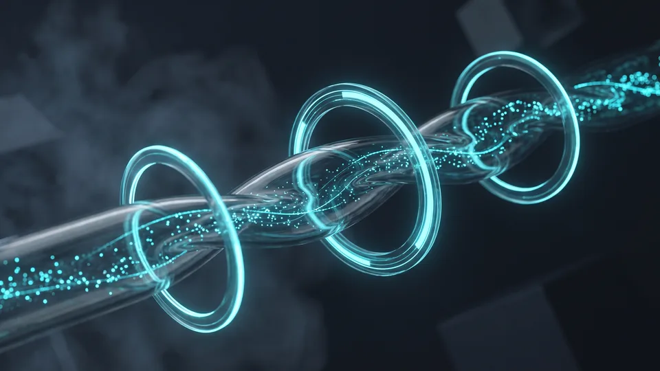

Teknik SEO Denetimi Nedir ve Neyi Ölçer?
Teknik SEO denetimi, arama motorunun sitenizde yaşadığı engelleri metriklerle saptar. İnceleme sonunda elinize net sayılar geçer. Bot kaç sayfayı taradı, kaçı dizine girdi, hangi sayfa yavaş kaldı? Rapor bu soruları tek tek sayıyla yanıtlar. Bütçenizi böylece en kritik soruna yönlendirirsiniz. Tahmin yerine ölçülmüş veriyle karar alırsınız.
Denetimin teknik tarafı, sitenizin görünür yüzünün değil altyapısının fotoğrafını çeker. İncelemede robots.txt dosyasını, XML site haritasını ve yönlendirme zincirlerini ele alırız. Canonical etiketleri ile sunucu yanıt sürelerini de aynı titizlikle ölçeriz. Her bulguyu bir sayıya bağlarız: kırık link adedi, zincir uzunluğu, dizin dışı sayfa sayısı.
Ölçüm eksenli bu yaklaşım, teknik SEO hizmetimizin temelini oluşturur. Denetim bittiğinde elinize teknik bir öncelik listesi geçer. Liste, hangi sorunun ne kadar trafiği engellediğini gösterir. Stratejinin bütünü için SEO hizmetleri sayfamızı inceleyebilirsiniz.
Denetimin Dört Ölçüm Alanı
Kapsamlı bir teknik SEO denetimi dört alanı ölçer. Bunlar; taranabilirlik, indekslenebilirlik, site hızı ve Core Web Vitals'tır. Taranabilirlik botların sayfalara erişimini, indekslenebilirlik sayfaların dizine kabulünü sayısallaştırır. Hız yükleme süresini, Core Web Vitals ise gerçek kullanıcı deneyimini ölçer. Dördü birlikte okununca sitenin teknik sağlık karnesi ortaya çıkar.Tarama ve İndeksleme Denetimi Hangi Sorunları Ortaya Çıkarır?
Tarama ve indeksleme denetimi, botların erişemediği sayfaları ve dizine girmeyen içerikleri ortaya çıkarır. Yönlendirme zincirleri ile yinelenen sayfalar da bu aşamada görünür olur. Bulguları sayıyla ifade ederiz. Kaç sayfa engelle karşılaştı, kaç adres zincirli yönlendiriyor, kaç içerik dizin dışında kaldı? Sorunun büyüklüğünü ancak bu sayılarla doğru okursunuz.
Tarama (crawl) aşamasında arama motoru botu, sayfalarınızı linkleri izleyerek keşfeder. Denetim bu keşfin önündeki engelleri tek tek listeler. Örnekler belli: robots.txt ile yanlışlıkla kapatılan bölümler ve uzun yönlendirme zincirleri. Hiç iç link almayan yetim sayfalar ile 404 veren kırık bağlantılar da listeye girer. İndeksleme tarafında botun taradığı sayfanın dizine kabulünü inceleriz. Teknik SEO denetimi bu iki aşamayı ayrı ayrı puanlar. Sorunun tarama katmanında mı dizin katmanında mı olduğu net biçimde ayrışır.
Yinelenen içerik, hatalı canonical etiketi ve boş kategori sayfaları dizin kalitesini düşürür. Türkiye'de dijital vitrine sahip işletme sayısı hızla artıyor. ETBİS'in 2025 raporuna göre e-ticaret yapan işletme sayısı 634 bin 611'e ulaştı. Rekabet bu ölçekte büyürken, dizinde yer almayan her sayfa rakibinize bırakılmış bir raftır.
Tarama Bütçesi Nasıl Ölçülür?
Tarama bütçesi, arama motorunun belirli bir sürede sitenizde gezinmeye ayırdığı kaynak miktarıdır. Denetimde sunucu log kayıtları ile tarama istatistiklerini karşılaştırırız. Botun vaktini hata sayfalarında mı yoksa önemli içerikte mi harcadığını böylece görürüz. Bütçe israfı, orta ölçekli sitelerde bile ciddi görünürlük kaybına işaret edebilir.Dizin Kapsamındaki Boşluklar Ne Anlatır?
Dizin kapsamı ölçümü, gönderilen sayfa sayısı ile dizine giren sayfa sayısını karşılaştırır. Aradaki fark, denetimin en açıklayıcı bulgularından biridir. Farkı yinelenen içerik, zayıf sayfa kalitesi veya sunucu hatası gibi nedenlere göre ayrıştırırız. Bu ayrım, düzeltme çalışmasının hangi ekiple yürüyeceğini de belirler.Core Web Vitals Eşikleri Denetimde Nasıl Okunur?
Core Web Vitals; yüklenme, etkileşim ve görsel kararlılığı ölçen üç metriktir. Metriklerin adları LCP, INP ve CLS'dir. Denetimde her sayfa grubunu bu üç eşiğe göre sınıflandırırız. Eşiği aşan şablonları belirleriz. Düzeltme önceliğini, etkilenen trafik hacmine göre sıralarız. Sonuç, sayfa bazlı bir iyileştirme haritasıdır.
Her metriğin tanımı ve Google'ın yayımladığı sağlıklı eşiği bellidir:
- LCP (Largest Contentful Paint): sayfadaki en büyük içerik ögesinin ekranda görünme süresidir. 2,5 saniyenin altı iyi kabul edilir.
- INP (Interaction to Next Paint): kullanıcı etkileşimine ekranın yanıt verme süresidir. 200 milisaniyenin altını hedefleriz.
- CLS (Cumulative Layout Shift): yükleme sırasında ögelerin kayma miktarıdır. 0,1'in altı kararlı sayılır.
Teknik SEO denetimi bu eşikleri tek tek sayfalara değil şablon gruplarına uygular. Bir ürün şablonundaki sorun, o şablonu kullanan yüzlerce sayfayı aynı anda etkiler.
Metrikler Hangi Kullanıcı Deneyimini Temsil Eder?
LCP sayfanın ne kadar hızlı göründüğünü temsil eder. INP tıklamaya yanıt hızını, CLS ise içeriğin yerinde durup durmadığını gösterir. Ziyaretçiniz bu üç duyguyu saniyeler içinde yaşar. Metrikler yalnızca o deneyimi sayıya çevirir.Alan Verisi ile Laboratuvar Verisi Farkı
Alan verisi, gerçek ziyaretçilerin cihazlarından toplanan ölçümdür. Laboratuvar verisini ise kontrollü test ortamında üretiriz. Denetimde ikisini birlikte değerlendiririz. Alan verisi sorunun varlığını kanıtlar; laboratuvar ölçümü kök nedeni bulmaya yarar. Yalnız birine bakmak eksik teşhis üretir.Site Hızı Bulguları İş Sonuçlarını Nasıl Etkiler?
Site hızı bulguları, yavaşlığın kök nedenini ölçümlerle gösterir. Rapor; sunucu yanıtını, görsel boyutlarını ve betik yükünü ayrı ayrı ölçer. Geç açılan sayfa, ziyaretçinin siteyi terk etme olasılığını artırır. Aynı gecikme reklam harcamanızın verimini de düşürür. Hız verisi bu yüzden doğrudan ticari bir göstergedir.
Hız, yani performans denetimi üç katmanı ölçer. Bunlar; sunucunun ilk yanıtı, kaynakların indirilmesi ve tarayıcının sayfayı işlemesidir. Katman ayrımı belirsiz şikâyeti düzeltilebilir bulguya çevirir. "Site yavaş" cümlesi, "sunucu ilk baytı geç gönderiyor" bulgusuna dönüşür. Teknik SEO denetiminin hız katmanı, kaybın tam olarak nerede oluştuğunu gösterir.
Ticaret Bakanlığı'nın duyurduğu rapora göre e-ticaret hacmi 2024'te 3 trilyon Türk lirasını aştı. Aynı duyuru, hacmin gayrisafi yurt içi hasıla içindeki payını yüzde 6,5 olarak veriyor. TÜİK'in güncel araştırmaları da internet kullanımının her yıl yaygınlaştığını gösteriyor. Pazar bu ölçekte büyürken, geç açılan site müşterisini rakibine gönderir.
Hız Denetiminde Öne Çıkan Üç Bulgu
Denetimlerde en sık üç bulgu öne çıkar. Bunlar; sıkıştırılmamış büyük görseller, önbelleksiz statik dosyalar ve ana iş parçacığını kilitleyen betiklerdir. Üçünü de ölçebilir, içeriğe dokunmadan düzeltebilirsiniz. Görsel sıkıştırma tek başına bile yükleme süresini gözle görülür biçimde kısaltabilir. Rapor, beklenen kazanımı sayfa grubu bazında tahmin eder.“2024 yılında 600 bin 800 olan e-ticaret yapan işletme sayısı, 2025'te 634 bin 611'e yükseldi.”
— Ticaret Bakanlığı, Türkiye'de E-Ticaretin Görünümü 2025
Sitenize Ücretsiz Teknik SEO Ön Denetimi İsteyin
Ücretsiz ön denetim; sitenizin tarama, indeksleme ve Core Web Vitals durumunu özetle ortaya koyar. Kapsamlı rapora geçmeden hangi alanda ne büyüklükte sorun olduğunu görürsünüz. Bu ilk adım, karar vermeden önce ölçmek isteyen KOBİ'lere uygundur. Başlangıç incelemesi size somut bir ilk fotoğraf sunar.
Süreç üç adımda ilerler:
- Site adresinizi iletirsiniz; ön denetim için panel erişimi ya da kurulum gerekmez.
- Ekibimiz tarama, dizin ve Core Web Vitals ölçümlerini içeren özet bulgu listesini hazırlar.
- Bulguları birlikte değerlendirir, önceliklendirilmiş bir yol haritası öneririz.
Teknik SEO denetimini düzenli bir bakıma dönüştürmek isterseniz teknik SEO hizmetimizin kapsamına göz atabilirsiniz. Altyapı yenilemesi gerekirse web tasarım ekibimiz sürece dahil olur. Özet dokümanı kısa tutar, teknik bilgi gerektirmeyen bir dille yazarız.
Ön Denetim Sonrasında Sizi Ne Bekler?
Ön denetim çıktısı, sorun alanlarını ve tahmini etki büyüklüğünü gösteren kısa bir özettir. SEO'nun teknik denetimine kaynak ayırmadan önce elinizde somut veri olur. Devam kararı tamamen size aittir. Özet, herhangi bir taahhüt olmadan elinizde kalır.
Teknik SEO Denetiminde Ölçülen Alanlar ve Sağlıklı Eşikler
| Denetim Alanı | Ölçülen Metrik | Sağlıklı Eşik (Google önerisi) | Tipik Bulgu |
|---|---|---|---|
| Yüklenme hızı | LCP (Largest Contentful Paint) | 2,5 saniyenin altı | Optimize edilmemiş büyük görseller |
| Etkileşim | INP (Interaction to Next Paint) | 200 milisaniyenin altı | Ana iş parçacığını kilitleyen betikler |
| Görsel kararlılık | CLS (Cumulative Layout Shift) | 0,1'in altı | Boyutu tanımlanmamış görsel ve reklam alanları |
| Sunucu yanıtı | TTFB (ilk bayt süresi) | 0,8 saniyenin altı | Yavaş barındırma, önbelleksiz sayfalar |
| İndeksleme | Dizindeki sayfa / gönderilen sayfa | Site haritasıyla tutarlı | Yinelenen içerik, hatalı canonical |
Kapsamınıza uygun yol haritasını birlikte çıkaralım; adımları ve zamanlamayı netleştirelim.
Kapsam çıkaralım Hizmet sayfasını görTeknik SEO denetimi, görünürlük sorunlarını tahminden kurtarıp sayıya döker. Tarama engelleri, dizin boşlukları ve hız bulguları tek raporda birleşir. Rapor netleşince yatırımın yönü de netleşir. Denetlenmiş bir site, her pazarlama kanalının verimini yükseltir. Ücretsiz ön denetim talebinizi bugün iletebilirsiniz.